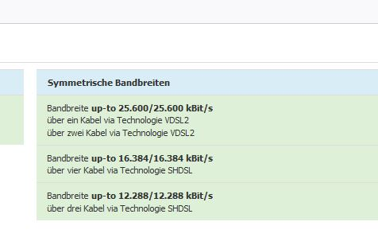

seit 30.6. gibt es immense Speedprobleme in 9500 beim DSL Internet. Wollte mal fragen wann/ob das behoben wird?  Das erschwert gewisse Homeoffice Arbeiten schon sehr. Danke.
Rexalius2000
Hallo
@Tinks77
und Willkommen in der Magenta Community,
Hast du deinen Router schon neu gestartet?
Wie schaut es aus wenn du über LAN verbunden bist ?
Was für eine Bandbreite ist im webinterface deines Routers hinterlegt?
Tinks77
Hallo @Rexalius und vielen Dank für die schnelle Antwort und das Welcome.
+  Router wurde mehrmals neu gestartet, auch vom Strom genommen, aus der Telefonbuchse gesteckt usw. Firmware ist auch gecheckt und aktuell.
+ Das Problem besteht per LAN und WLAN. Wurde auf 4 verschiedenen Geräte getestet, überall gleich langsam.
+ Sind das die Daten die du vom  Webinterface brauchst?
DSL Aktiv
[0:34:45]
ADSL 2+ (ITU G.992.5) Annex A
Oder ist es etwas anders? Da hört mein Wissen dann leider doch schon etwas auf mit den ganzen Zahlen.
Auch beim Netztest sind die Werte eine Katastrophe:
Wie gesagt, das Problem hat erst ab 30.6. begonnen, Tage zu vor war alles normal, Downloads liefen gut dahin, Streamingdienste liefen ohne jegliches zwischenbuffern und nun geht plötzlich garnix mehr.
Bearbeitet
von Tinks77
Rexalius2000
Du hast aktuell nur 12 MBit an Download und 1 MBit an upload
Das glaube ich dir sofort,das es damit zu Problemen kommt und das streamen/surfen keinen Spaß mehr macht. Hast du die Störung bereits Magenta gemeldet? Wenn nein  am besten ein Störungsticket aufgeben dieses dann Magenta an A1 weiterleitet . Das Magenta Serviceteam erreichst du unter :0676/2000
Schau mal, ob du bei deinem Modem im Bereich Internet solche Einträge zum Thema Noise Magin oder so ähnlich findest.
Ich kenn das auch - DSL kann auch zicken, wenn Störungen auf der Leitung sind.
Wenn du da einen Wert findest, mach einen Screenshot und schick ihn mal rüber.
Tinks77
@Rexalius2000
Danke, Ticket hab ich noch keines gelöst da ich der Hoffnung war, dass sich das Ganze von selbst wieder behebt. Bin nicht so der Fan von Hotlines. Aber, wird mir wohl nix übrig bleiben
Verfügbarkeitscheck hab ich gemacht, da sagt er mir, dass bei mir überhaupt nur "Internet Felx" verfügbar sein soll.
Danke für deine Antwort. Du meinst sicher das hier? Kann man da eine Auffälligkeit erkennen? Ich bin bei diesen Zahlen leider ein noob.
Der erste Wert ist Empfangsrichtung, der 2. Senderichtung
Bearbeitet
von Tinks77
Christian_E
Ja genau.
Schau mal in der ersten Zeile auf den hinteren Wert. In Screenshot zeigt er 8 an.
Schau mal bitte, wie weit der runter geht.
Rexalius2000
@Tinks77
Es kann natürlich sein das sich das alles wieder selber behebt,  aber da die Störung doch schon länger besteht musst du wohl leider bei der Hotline anrufen. Du hast nicht zufällig eine Freileitung zu deinem Haus/Wohnung? Bei der Hitze hat sich meine Bandbreite auch etwas geändert was ganz normal ist bei einer Anbindung über Kupfer. Die Leitfähigkeit der Kupferleitung kann sich im Sommer ändern,Speziell wenn man die besagte Freileitung hat.
Du kannst auch
Hier
die aktuelle Leitungskapazität überprüfen. Aussagekräftig ist die letzte Spalte. Poste davon mal einen Screenshot.
Tinks77
@Christian_E
Alles klar, mach ich. Bis jetzt hat es sich noch nicht unter 8 bewegt.
@Rexalius2000
Du hast Recht, ich habe eine Überleitung von Haus zu Haus und wir hatten es die letzte Woche auch recht heiß, mittlerweile jedoch nicht mehr.
Ist das die richtige Spalte?

Christian_E
Ich sehe bei 8 eher ein hohes Rauschen. Der Wert sollte auf keinen Fall unter 5 gehen, sonst kann sich der Sync verloren gehen.
Sorry mein Posting hat sich jetzt mit deinem überbeschnitten.
Bearbeitet
von Christian_E
Rexalius2000
@Tinks77
Nicht ganz, aber ich sehe bei dir wäre statt ADSL-2 auch VDSL-2 verfügbar was mehr Leistung erbringen kann. Man müsste deine Leitung in der Vermittlungsstelle oder am DSLAM(DSL-Zugangsmultiplexer-Kasten am Strassenrand) umrangieren. Vielleicht kann A1 das im Zuge der Störungsbehebung für dich machen. ADSL2 ist doch schon ziemlich eine alte Technologie.
Edit:Aufgrund des Rauschens hat sich wohl die Leitung gedrosselt das die Verbindung nicht abbricht oder im Kasten haben sich ein paar Mitbewohner eingenistet *SCNR* üòÑ
Spaß bei Seite,Störungsticket aufgeben und die Ursache suchen.
Bearbeitet
von Rexalius2000
Tinks77
@Christian_E
Ich werds weiter beobachten und dann auch bei der Hotline mal anmerken.
@Rexalius2000
Haha... ja, ich hätte zwar auch Nager zu Hause, aber die kommen dann Gott sei Dank doch nicht so weit
Aber ja, nochmals danke an euch beide für die schnelle Hilfe. Ich werde den lieben Support mal kontaktieren und dann sehe ich weiter  was dabei rauskommt.
Christian_E
Genial Rexalius2000. üòÅ
Ja mach das bei der Hotline. Und halt uns bitte am laufenden.
LG Christian
Und wir helfen nat√ºrlich gerne. ü§ò
Rexalius2000
vor 13 Minuten schrieb Christian_E:
Genial Rexalius2000. üòÅ
@Christian_E
Erinnert mich etwas an die neue Magenta Werbung ab der Sekunde 10
@Tinks77
Ich hoffe die Störung ist bald behoben-Halte uns bitte am laufenden
Christian_E
Ja da sehen wir die √úbelt√§ter. üòÅ
Bin aber doch neugierig, was in diesem Fall wirklich die Ursache ist.
Bearbeitet
von Christian_E
Rexalius2000
Hmm,ich vermute mal eine Korrosion im Verteiler aufgrund des hohen Rauschen. Hatte mal so einen ähnlichen Fall bei mir Zuhause. Was
@Tinks77
noch machen könnte,wäre die Anschlüsse in der Nachbarschaft mit check.kapper abzufragen. Wenn die Geschwindigkeit besser ist als bei ihm und sie an derselben Vermittlungsstelle hängen,könnte man den Fehler besser lokalisieren. Aber der Techniker sollte das normalerweise gleich herausfinden.
Christian_E
Ja das sollte zu finden sein.
Es ist auch relativ einfach möglich, den Abschluss umzuhängen auf ein anderes Adernpaar, denn in der Regel sind eh immer welche frei.
Das müsste dann aber die A1 machen.
Kann aber viele Ursachen haben. Darum spannend, was es in diesem Fall wirklich ist.
Da Lob ich mir schon lwl, denn da sollte es solche Themen nicht mehr geben.
Rexalius2000
vor 5 Minuten schrieb Christian_E:
Da Lob ich mir schon lwl, denn da sollte es solche Themen nicht mehr geben.
Teilweise leider noch Zukunftsmusik. Was ich nicht verstehe,warum A1 bei mir Glasfaserpipes vor 2 Jahren verlegt hat und diese bis heute immer noch nicht aktiv sind. Hoffe so sehr auf VPLUS
Bearbeitet
von Rexalius2000
Christian_E
Ja geht mir auch so.
LWL ist bis auf ein paar 100 Meter zu mir verlegt aber weiter wird nicht weiter verlegt.
Obwohl es da schon Formulare gegeben hat, wer Interesse hat.
Klar kostet das Geld aber A1 hat bei uns die Förderungen zum Ausbau bekommen - der Auftrag wäre klar aber die Umsetzung scheinbar nicht
ich wollte euch auf jeden Fall Feedback geben, sobald das Problem behoben wurde. Aber das ist es leider nach wie vor nicht. Habe die Hotline vorige Woche angerufen. Da wurden einige Tests gemacht... bla bla bla...es soll angeblich alles in Ordnung sein. Die Leitung hat nix. Es kommt auch drauf an, wieviel Geräte am Router hängen usw. Habe auch das Rauschen erwähnt, das wurde komplett ignoriert. Ich glaube, die Dame wusste am Tel. nitmal was das ist.
Jedenfalls Fazit ist, dass mein Datenpaket raufgeschraubt werden soll und ich einen neuen Router zugeschickt bekommen soll. Der sollte vorige Woche Mittwoch/Donnerstag kommen. Bis heute ist allerdings noch nichts geschehen, außer dass ich per Mail den neuen Vertrag zugeschickt bekommen habe.
Also ja, leider kann ich euch noch nicht wirklich viel wesentliches berichten.
Christian_E
Oje. Das klingt leider zäh. Hoffe das Paket kommt bald an.
Rexalius2000
Danke für die Rückmeldung. Wahrscheinlich stellt man dich auf das schnellere VDSL2 um.
Tinks77
Also heut hat mich Magenta endlich angerufen. Der neue Router wird erst heute mal losgeschickt.
Und der A1 Techniker für die Leitungsfreischaltung kommt nächste Woche Donnerstag!! Somit dauert das ganze dann schon 17+ Tage. Also ob man da noch von gutem Kundenservice sprechen kann... naja. Der neue Tarif, den mir die Dame da am Telefon empfohlen hat, wird dann Magenta Fix 40 sein. Mal sehen ob das Ganze dann endlich besser wird.
Christian_E
Ja das ist wenig erbauend aber zumindest hast du jetzt mal einen Termin.
Und wenn der Router heute geschickt wird, sollte er innerhalb Österreich diese Woche noch ankommen.
Ich halt dir die Daumen, dass es doch dann bald noch klappen wird.
Tinks77
Hallo zusammen, ich wollte nur nochmal mein Endfazit euch schreiben. Ich hass es immer, wenn man Threads im Internet liest und dann mittendrin aus ist und man nicht erfährt was war.
Also der neue Router ist gekommen, leider hatte dann Magenta die Rufnummermitnahme vergessen. Daher wurde der ganze Auftrag gecancelt, musste diesen Router wieder retour schicken. Alles auf Anfang. Neuer Router gekommen, neuer Techniker Termin wurde ausgemacht. Gestern, von einer Stunde auf die andere ging dann plötzlich garnix mehr. Nach 3x Anrufen bei der Hotline konnte mir dann endlich einer die Auskunft geben, dass die Leitung schon aus der Ferne umgestellt wurde und ich möge doch einfach den neuen Router installieren. Nicht, dass mir irgendjemand Bescheid gesagt hätte, der neue Techniker Termin wäre nämlich erst am 3.8. gewesen.
Was schlussendlich das Problem war konnte mir auch keiner wirklich sagen. Aber das Internet läuft jetzt wieder stabil und schnell, ich hab einen neuen Router, keine monatlichen Mehrkosten... nur jede Menge "Geschiss" gehabt. Aber naja...
Jedenfalls euch nochmal danke für die Ideen und Lösungsansätze.
Tinks77
Hallo liebe Community,
seit 30.6. gibt es immense Speedprobleme in 9500 beim DSL Internet. Wollte mal fragen wann/ob das behoben wird?  Das erschwert gewisse Homeoffice Arbeiten schon sehr. Danke.
Christian_E
Zitat:
Hallo zusammen, ich wollte nur nochmal mein Endfazit euch schreiben. Ich hass es immer, wenn man Threads im Internet liest und dann mittendrin aus ist und man nicht erfährt was war.
Also der neue Router ist gekommen, leider hatte dann Magenta die Rufnummermitnahme vergessen. Daher wurde der ganze Auftrag gecancelt, musste diesen Router wieder retour schicken. Alles auf Anfang. Neuer Router gekommen, neuer Techniker Termin wurde ausgemacht. Gestern, von einer Stunde auf die andere ging dann plötzlich garnix mehr. Nach 3x Anrufen bei der Hotline konnte mir dann endlich einer die Auskunft geben, dass die Leitung schon aus der Ferne umgestellt wurde und ich möge doch einfach den neuen Router installieren. Nicht, dass mir irgendjemand Bescheid gesagt hätte, der neue Techniker Termin wäre nämlich erst am 3.8. gewesen.
Was schlussendlich das Problem war konnte mir auch keiner wirklich sagen. Aber das Internet läuft jetzt wieder stabil und schnell, ich hab einen neuen Router, keine monatlichen Mehrkosten... nur jede Menge "Geschiss" gehabt. Aber naja...
Jedenfalls euch nochmal danke für die Ideen und Lösungsansätze.
Ja es wäre manchmal so einfach, wenn die Informationskette funktionieren würde. In deinem Fall gab es zwar ein gutes Ende aber durch die fehlenden Infos ist das Ganze leider getrübt worden.
Schade aber ich freue mich, dass nun alles funktioniert und vielleicht ist es ja ein Ansporn für Magenta, hier die Informationen besser zu koordinieren und letztendlich an den wartenden Kunden zu bringen.
Das Verständnis zum Warten ist ja da, wenn man allerdings nicht weiß, tut sich im Hintergrund was oder nicht, dann fühlt man sich durchaus oft mal ziemlich ohnmächtig und hilflos.
{kind=link}
{kind=link}
{kind=link}